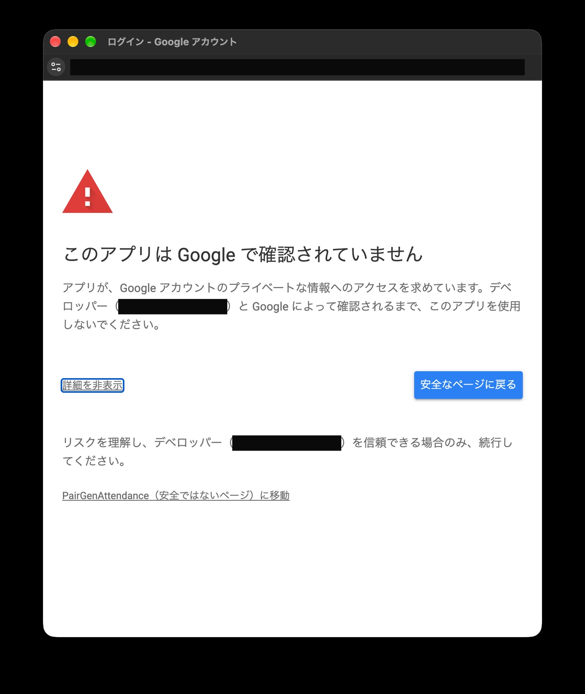

Google の画面は、アカウントの設定によって日本語または英語で表示されます。このページでは、押すボタンを「日本語（English）」の形で併記しています。表示されている言語に合わせて読んでください。
この作業のイメージ
Web の設定に慣れていない方向けに、これから行うことをたとえで説明します。専門用語が出てきても、あとの章で 1 つずつ操作を説明するので、ここでは「何をしているのか」だけつかんでください。
全体としては、出欠を集めるための Web アプリを、自分の Google ドライブにコピー（「インストール」）して、使えるようにする作業です。コピーしたものは、自分の Google ドライブに保存され、自分のアカウントで動きます。パソコンにアプリを入れて、初回に許可を出し、ログイン用のパスワードを決めるのと同じ流れです。
章
実際の操作
たとえると
1
スプレッドシートをコピーする
Web アプリを自分の Google ドライブにコピー（インストール）する（配布されている本体を、自分のドライブに取り込む）
2
キー（ACCESS_KEY と READ_KEY）を設定する
パスワードを決める（参加者が使うものと、くみあぷ（PairGen）が使うもの）
3
ウェブアプリとして公開（デプロイ）する
インストールしたアプリをインターネットに公開し、アクセス用の URL（住所）を発行する
4・6
権限を承認する（1 回目・2 回目）
スマートフォンのアプリで最初に出る「〜へのアクセスを許可しますか？」に、許可を出す
5
URL を確認する
公開したアプリの住所を控える
7
動作を確認する
アプリを起動して、動くか試す
8
参加者とアプリに渡す
住所とパスワードを参加者に伝え、くみあぷ（PairGen）にも登録する
この作業は、基本的に最初の 1 回だけです。済んでしまえば、あとは参加者が Web アプリで出欠を入力し、くみあぷ（PairGen）がそれを読み込むだけになります。
Google から権限の承認を求められる場面が、2 回あります。どちらも手順は同じで、2 回とも必ず管理者が行ってください。ここでは 1 回目（デプロイ直後）を説明します。2 回目は「6. ウェブアプリを開いて権限を承認する」です。
デプロイ直後に、「アクセスを承認（Authorize access）」と出るので、クリックします。
使用するアカウントを選びます。
「このアプリは Google で確認されていません（Google hasn't verified this app）」と出ます。これは、自分で作った Apps Script に必ず出る表示で、異常ではありません。「詳細（Advanced）」をクリックします。
下に出てくる「PairGenAttendance（安全ではないページ）に移動（Go to PairGenAttendance (unsafe)）」をクリックします。
「PairGenAttendance が Google アカウントへのアクセスを求めています（wants to access your Google Account）」と出ます。内容を確認し、下までスクロールして「次へ（Continue）」をクリックします。もう一度「次へ（Continue）」が出たら、同じようにクリックします。

画面は、アカウントの言語設定によって日本語か英語で出ます。「詳細（Advanced）」は目立たない小さなリンクで、「安全なページに戻る（Back to safety）」のボタンの反対側にあります。間違えて「安全なページに戻る」を押さないよう注意してください。
承認の画面には「Google スプレッドシートのすべてのスプレッドシートの表示、編集、作成、削除（See, edit, create, and delete all your Google Sheets spreadsheets）」と表示されます。Google の権限は「このスプレッドシートだけ」に絞れないため、あなたの Google アカウントのスプレッドシート全体が対象として表示されます。気になる場合は、この Web アプリ専用の Google アカウントを作って、そのアカウントで作業することをおすすめします。
データの保管: 出欠データは、あなたの Google ドライブのスプレッドシートに保存されます。2 年より古いイベントと出欠は自動で削除されます。
10. 別の Google アカウントにデータを移行する
管理者が交代するときや、アカウントを変えたいときの手順です。出欠のデータ（メンバー、イベント、出欠、場所）は、スプレッドシートに付属する Web アプリ本体とは別のファイル（データ用スプレッドシート）に保存されています。このファイルは、最初に Web アプリを開いたときに、デプロイした管理者の Google ドライブへ自動的に作られます。
くみあぷ（PairGen）の「グループ管理」で、Google スプレッドシートのグループを、Web アプリごとに追加します（グループ名、その Web アプリの URL、その READ_KEY）。
参加者には、所属するグループの Web アプリの URL と ACCESS_KEY を伝えます。
グループごとにデータは完全に分かれます。コピーしたスプレッドシートには、元のスクリプトプロパティ（キー）やデータは引き継がれず、初めて開いたときに新しい空のデータ用スプレッドシートが作られます。メンバーやイベントを移したいときは、10 の手順 B が参考になります。
1 人が複数のグループに参加するときは、それぞれの Web アプリで名前を登録します。
12. Web アプリをバージョンアップする
Web アプリの新しい版が出たときは（今のバージョンと最新の版は「13. Web アプリのバージョンを確認する」で確認できます）、古いスプレッドシートを削除し、新しいスプレッドシートをコピーして、デプロイし直します。出欠のデータは別ファイル（データ用スプレッドシート）にあるので、そのファイルを新しい Web アプリにつなげば、メンバーやイベントはそのまま使えます。